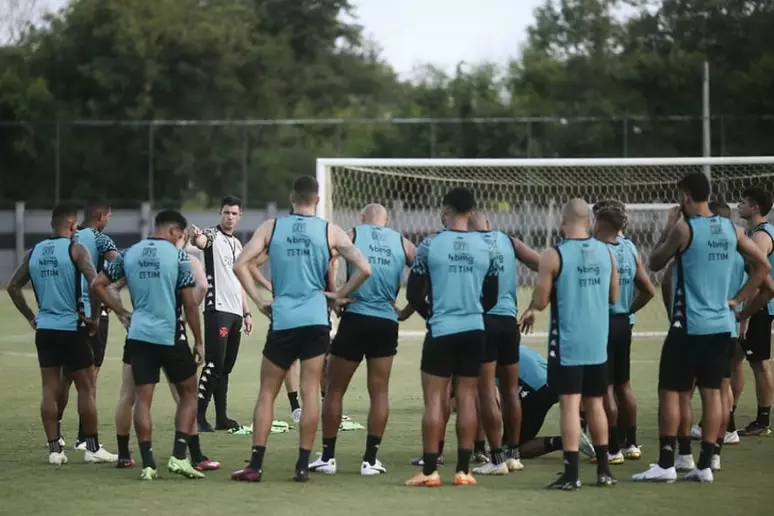

VASCO NOTÍCIAS
Vasco anuncia saída de Nenê, que vai se aposentar no fim do ano
Jogador vai voltar ao Vasco no início do próximo ano para assumir função fora dos gramados. "Uma história dessa tão linda não poderia acabar", afirma ele
Nenê se despediu de seus companheiros e funcionários de clube na tarde desta segunda, durante o treino no CT Moacyr Barbosa.
- Queria dizer que chegou o momento que eu vou parar de jogar pelo Vasco. Sabia que um dia isso ia chegar, a gente nunca está preparado. Quando você faz uma coisa com tanto amor, tanta paixão e um propósito... Vim para cá com um objetivo e acabou virando uma promessa, uma questão de palavra. Na primeira vez não consegui e disse que não ia parar e jogar enquanto não cumprisse essa promessa - disse ele, em vídeo divulgado pelo clube.
Nenê teve duas passagens pelo Vasco. A primeira foi entre 2015 e 2018, quando conquistou os títulos do Carioca e da Taça Guanabara em 2016 e da Taça Rio de 2017. Retornou ao clube no fim de 2021 e foi peça essencial na campanha do acesso no ano passado - foi dele, por exemplo, o gol da vitória por 1 a 0 sobre o Ituano, fora de casa, na última rodada.
Ao todo, Nenê tem 199 jogos oficiais com a camisa do Vasco. O clube, no entanto, inclui amistosos na contagem e considera que são mais de 200 partidas. Com as duas passagens, ele marcou 60 gols e foi o autor de 51 assistências.
O Time Cruzmaltino fecha com 4 Jogadores para temporada 2023
São Eles: Lucas Piton ex Corinthians, Puma Rodríguez ex Nacional-URU, Léo Pele ex São Paulo
Paulo Bracks vê o elenco do Vasco pronto para a Série A: “Temos grande potencial”
O diretor-executivo Paulo Bracks mostrou confiança e afirmou que o Vasco está pronto e preparado para ficar na parte de cima da classificação.
“Estamos prontos? Estamos. Mas a gente quer mais? Queremos. Nossa missão é ter um primeiro ano desse projeto que seja sólido para que o médio prazo entregue à torcida do Vasco o que ela tanto espera. O clube tem uma regra, um planejamento, uma estratégia e tudo será cumprido. A 777 não vai aceitar mudanças sem análises. O torcedor vai ver o Vasco brigando sempre acima na tabela”

Depois de disputar mais um jogo-treino, o Vasco entra na última semana de preparação para a estreia no Campeonato Brasileiro. No sábado (08), a equipe do técnico Maurício Barbieri venceu o Resende por 3 a 0, em São Januário. Os gols foram marcados por Alex Teixeira, Pedro Raul e Pec.
Nesta segunda-feira (10), a comissão técnica terá a última chance de observar o elenco em ação de jogo. O adversário será o Artsul, do Rio de Janeiro.
Além da atividade, Barbieri terá mais cinco sessões de treinos até a abertura do Brasileirão, no próximo sábado (15), às 21h, contra o Atlético-MG, no Mineirão. Em entrevista à Vasco TV, o treinador projeta um time bem preparado para a competição nacional.
– Eu acho que coletivamente a gente vai chegar mais preparado, mais desenvolvido, uma equipe mais madura para o início do Brasileiro, disse o técnico do Vasco.